vignettes/intermittent_long.Rmd
intermittent_long.RmdThis vignette shows a intermittent-flow analysis from a lengthy experiment, with over 100 replicates and a background rate that changes over the course of the experiment. This type of experiment is one many fish physiologists in particular will be familiar with.
The example data (zeb_intermittent.rd) was kindly
provided by Dr. Davide
Thambithurai, and is from an experiment on a zebrafish. It is
comprised of one replicate of 14 minutes duration (12 minutes recording,
2 minutes flushing), followed by 105 replicates of 11 minutes duration
(9 minutes recording, 2 minutes flushing). In addition there are pre-
and post-experiment background recordings. See
help(zeb_intermittent.rd) for row locations of all
stages.
See vignette("intermittent_short") for an example with a
smaller dataset, which covers in more detail the basics of analysing
intermittent-flow data and is a better starting point if you are new to
respR or analysing these types of experiment. Even if not,
we would recommend reading both before starting your analysis.
From this experiment dataset we want to extract several metrics:
Pre- and post-experiment background rates. Background rates were recorded at the start and end of the experiment (initial and end sections with shallow slopes). This was a lengthy experiment in high temperatures, and so the microbial background rate increases substantially over the course of the experiment. We will assume this increase is constant (i.e. linear), and each replicate rate will be adjusted with a background rate calculated according its time within the experiment. That is, later replicates will be adjusted by a greater amount.
Maximum metabolic rate (MMR). Before this experiment the fish had been exercised to exhaustion, then immediately placed in the respirometer. The first replicate during which it is recovering from the accrued oxygen debt will represent MMR.
Routine metabolic rate (RMR). This will be calculated using the later replicates once the animal has recovered from the exercise. This is generally defined as the routine use of oxygen to fuel basal metabolism and minor spontaneous movements for maintaining station or posture.
Standard metabolic rate (SMR). Sometimes also known as basal or minimum metabolic rate. This is also calculated using the later replicates once the animal has recovered. This is generally defined as the lowest oxygen use rates observed, which are representative of the requirements of basal metabolism only.
Which of these last two metrics is valid or appropriate to report depends on the organism and the circumstances and aims of the experiments. Their definitions are widely debated, and there is a huge literature on the differences between these physiological metrics. See here for some papers discussing these. Here, we will show how to extract what may be regarded as both RMR and SMR from this dataset.
Extracting the background rates and MMR are relatively straightforward and will be covered in their own sections.
After this, we will show two different approaches to extract RMR and
SMR using respR functions. The first
uses the dedicated calc_rate.int() function to run
calc_rate on each replicate to extract a rate from the same
data region of each, before filtering these to get the RMR. The second uses the dedicated auto_rate.int()
function to run auto_rate on each replicate to extract the
lowest rate from each of a specified width, before filtering these to
get the SMR.
Please note: You should not simply copy and
repeat the following code on your own data. They are examples to show
how the respR functions are adaptable and flexible and how
rates can be extracted, filtered and selected to arrive at a final
reportable rate in a variety of ways. They are not recommendations that
you should use these specific approaches for particular outputs. There
is a massive
literature around respirometry, the different physiological metrics,
and how to quantify them. Before analysis of your own data you should
familiarise yourself with it, with similar experiments in the
literature, and the current state of best practices in the field. Many
factors such as appropriate regions or widths to extract rates from,
method used to extract rates, and final selection criteria differ
between experiments for very good reasons, in that every study is
different. It is important to select appropriate analysis factors
objectively and report them in your methods. See especially Killen
et al. (2021) and Prinzing
et al. (2021).
Note we use the native pipe operator (|>) introduced
in R
v4.1 for much of the following. These can be substituted for
dpylr pipes (%>%) if you have not yet
updated, or alternatively save output objects and enter them into the
next function.
inspect() is the general respR function for
visualising and inspecting data prior to analysis, and saving it to an
object that can be used in subsequent functions. This is a very large
dataset (nearly 80,000 rows), so if running the code in this vignette
note that operations may take some time.
Before progressing, we’ll inspect a portion of the data at the start without saving the result to show the structure.
zeb_intermittent.rd |>
subset_data(from = 1, to = 18000, by = "row") |>
inspect()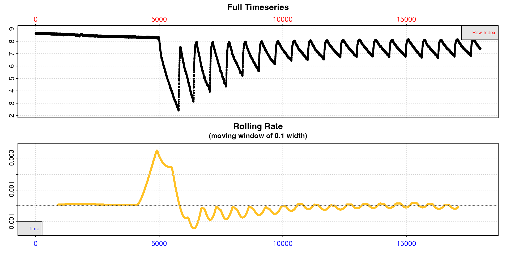
The top plot shows the initial background recording up to row 5000, the first replicate of 14 minutes duration to determine MMR, followed by replicates of 11 minutes duration. We can see in these oxygen decreasing, separated by regular flushes where it increases back to ambient levels. The bottom plot, a rolling rate across a window of 10% of the data, is not particularly useful as this window will include multiple replicates.
We can similarly have a quick look at the end of the dataset.
zeb_intermittent.rd |>
subset_data(from = 65000, by = "row") |>
inspect(width = 0.01)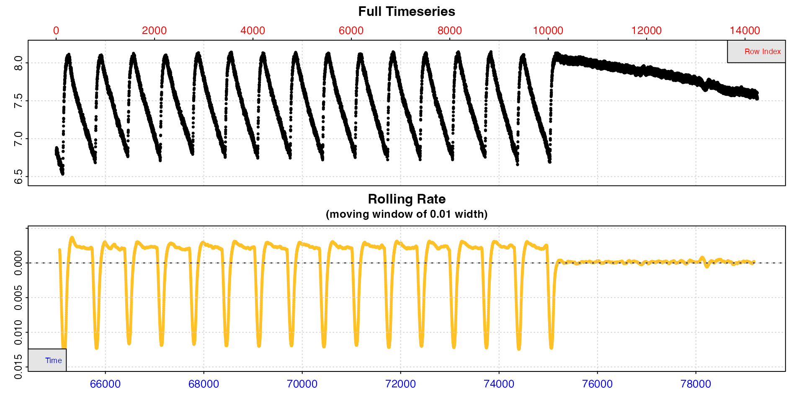
We can see that by the end of the experiment the replicates are much
more regular, suggesting rates have stabilised, and we can also see the
end background recording. This time we passed a different
width to inspect, so the rolling rate plot is
across a 1% window. This makes it slightly more useful, and we can see
within each replicate rates seem to be consistent at around -0.0025,
while the background rate is much lower and closer to zero (dashed
line).
Now that we are fairly satisfied the experiment looks as expected we can inspect the entire dataset and this time save the result to an object we will use for the rest of the analysis.
zeb <- inspect(zeb_intermittent.rd)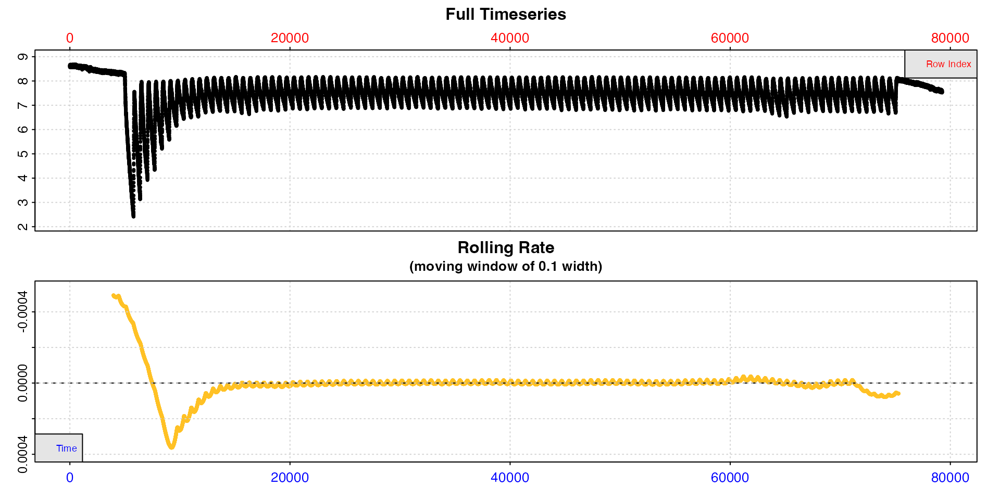
Here because the dataset is so large the plots are of limited use, but we can at least see that much more oxygen was used in the early replicates, as would be expected because the specimen was exercised prior to the experiment, after which they stabilise and are more regular.
The initial and end sections of the data will be used to calculate
background rates and how they change over the course of the experiment.
Timepoints of these will typically have been recorded as part of the
experiment, so can be used to subset the relevant sections (see
?zeb_intermittent.rd for row locations of all stages).
We subset these regions from the inspect object we just
saved above, and save them as separate calc_rate.bg
objects.
bg_pre <- zeb |>
subset_data(from = 1, to = 4999, by = "row") |>
calc_rate.bg()
bg_post <- zeb |>
subset_data(from = 75140, to = 79251, by = "row") |>
calc_rate.bg()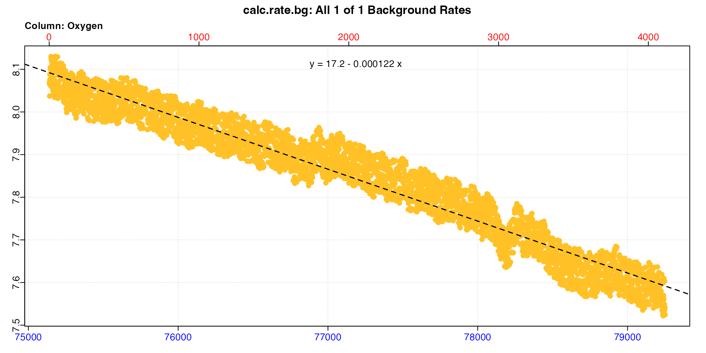
The two different background rates (only the post-experiment plot is shown above) have been saved to these two objects. We can see the actual values by printing them:
bg_pre
#>
#> # print.calc_rate.bg # ------------------
#> Background rate(s):
#> [1] -0.0000742
#> Mean background rate:
#> [1] -0.0000742
#> -----------------------------------------
bg_post
#>
#> # print.calc_rate.bg # ------------------
#> Background rate(s):
#> [1] -0.0001217
#> Mean background rate:
#> [1] -0.0001217
#> -----------------------------------------We can see the background rate increases by around 70% over the course of the experiment. We will use these later to apply a dynamic background adjustment to specimen rates based on their time during the experiment.
Here we calculate maximum metabolic rate (MMR) from the first replicate. This replicate is longer than the others; 14 mins (840 rows) vs. 11 mins (660 rows) for all others.
Here, we subset the first replicate which starts at row 5000 and is
14 minutes long (840 rows) to a separate inspect object,
excluding the two minutes of flush (120 rows) at the end, and plot it to
see how the rate changes over the replicate.
# subset rep 1
zeb_rep_1 <- subset_data(zeb,
from = 5000,
to = 5000 + 840 - 120,
by = "row") |>
plot(width = 0.2)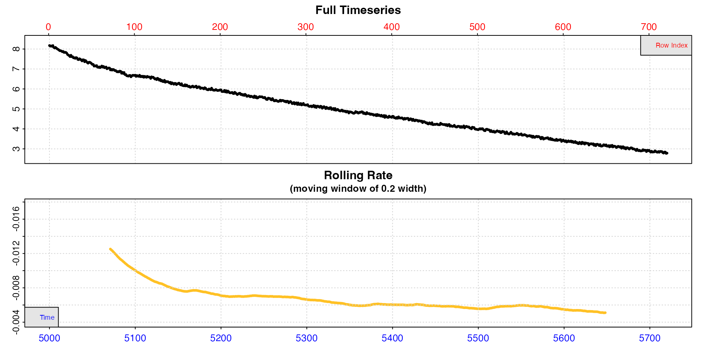
In this replicate, the rolling rate plot shows that calculated at
this particular width, the rate declines rapidly from
around -0.012 to around -0.008, then declines more slowly over the
course of the replicate (note we pass a higher width than
the default 0.1 to smooth the rolling rate a little more). This is as we
would expect from an animal recovering from exercise. However the very
initial stages of replicates are often unstable and excluded from rate
analysis (usually known as the “wait” phase). Therefore we will probably
want to extract our MMR rate after this initial stage but before it
declines too much.
We will show three different ways of extracting what could be defined
as an MMR. First, we will use calc_rate() to extract a rate
from a single specific region. Secondly, we will use the
auto_rate "highest" method to automatically
extract the highest rate of a specific width. Lastly, we will use the
auto_rate "linear" method with the default
inputs to identify linear regions of the data and choose the highest
from amongst these. In this last example we will also show how to adjust
and convert rates, then filter them using select_rate() to
arrive at a final reportable result.
calc_rate
This function (see vignette("calc_rate")) simply allows
you to extract a rate (or multiple rates) from a specified row, time, or
oxygen region. In the later example for extracting
rates from the other replicates using calc_rate.int() we
use the same three minute wait phase and five minute
measure phase in each replicate. We will use the same here
to allow for comparison with those rates. This is fairly common practice
in respirometry studies and perfectly acceptable, in that it is
objective and consistent.
zeb_mmr <- calc_rate(zeb_rep_1,
from = 180, # three minutes 'wait' after start
to = 480, # five minutes later = 'measure' phase
by = "row") |>
summary()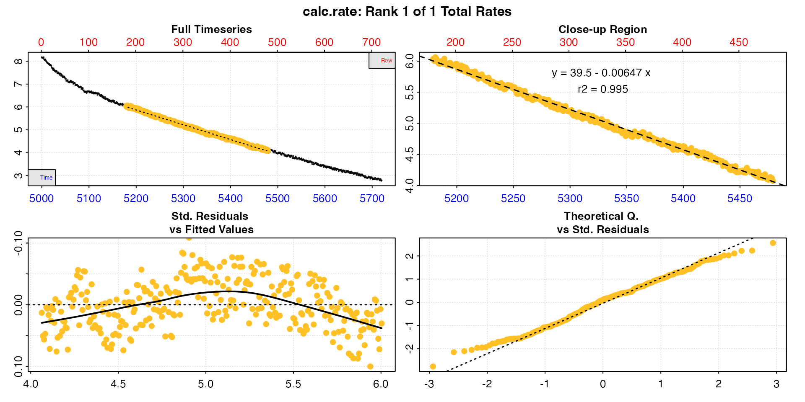
#>
#> # summary.calc_rate # -------------------
#> Summary of all rate results:
#>
#> rep rank intercept_b0 slope_b1 rsq row endrow time endtime oxy endoxy rate.2pt rate
#> 1: NA 1 39.5 -0.00647 0.995 180 480 5179 5479 6.03 4.08 -0.00653 -0.00647
#> -----------------------------------------We can see the rate as the final column in summary, and this would be perfectly acceptable to report as the MMR as long as the analysis criteria were also included. See option 3 for how to adjust and convert the rate.
auto_rate method = "highest"
auto_rate also allows you to also extract rates of a
specific time or row width, but in contrast to calc_rate it
calculates every rate of this width across the dataset and then
orders them in various ways. One method is to order by highest absolute
value to get the highest uptake rate.
Here we run this method and choose a width of two
minutes (120 rows), that is the function will calculate every rate of
this width and order them from highest to lowest. We use the same three
minute wait phase to exclude the initial part of the
replicate, and for that we use subset_data() to remove the
first 180 rows, then pipe the output to auto_rate (we could
also have done this when we first subset and inspected the data above).
zeb_mmr <- zeb_rep_1 |>
subset_data(from = 180, by = "row") |>
auto_rate(method = "highest",
width = 120,
by = "row") |>
summary()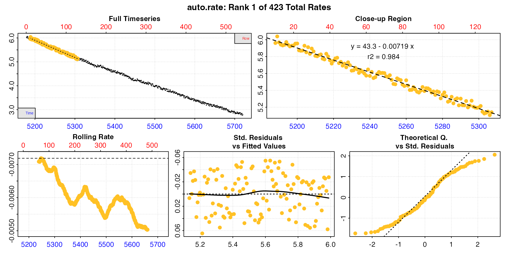
#>
#> # summary.auto_rate # -------------------
#>
#> === Summary of Results by Highest Rate ===
#> rep rank intercept_b0 slope_b1 rsq density row endrow time endtime oxy endoxy rate
#> 1: NA 1 43.3 -0.00719 0.984 NA 10 129 5188 5307 5.96 5.14 -0.00719
#> 2: NA 2 43.2 -0.00718 0.984 NA 9 128 5187 5306 5.98 5.11 -0.00718
#> 3: NA 3 43.2 -0.00718 0.984 NA 11 130 5189 5308 6.04 5.17 -0.00718
#> 4: NA 4 43.2 -0.00717 0.984 NA 14 133 5192 5311 5.93 5.07 -0.00717
#> 5: NA 5 43.2 -0.00717 0.984 NA 15 134 5193 5312 5.94 5.14 -0.00717
#> ---
#> 419: NA 419 31.7 -0.00505 0.971 NA 420 539 5598 5717 3.41 2.84 -0.00505
#> 420: NA 420 31.7 -0.00505 0.971 NA 419 538 5597 5716 3.37 2.79 -0.00505
#> 421: NA 421 31.6 -0.00503 0.971 NA 423 542 5601 5720 3.37 2.79 -0.00503
#> 422: NA 422 31.6 -0.00503 0.971 NA 421 540 5599 5718 3.44 2.84 -0.00503
#> 423: NA 423 31.6 -0.00503 0.971 NA 422 541 5600 5719 3.39 2.77 -0.00503
#>
#> Regressions : 423 | Results : 423 | Method : highest | Roll width : 120 | Roll type : row
#> -----------------------------------------We have already seen that rates are high at the start and then decline across the replicate, so it’s not a surprise that the highest rates are from early in the replicate. We can see our MMR under these criteria would be the first row of this summary table. See next section for how these multiple rates can be adjusted, converted, and filtered to get a final output rate.
auto_rate method = "linear"
Here we simply run auto_rate and let the default inputs
be applied to find the linear regions of the data. Be sure to read
help("auto_rate") and vignette("auto_rate") to
understand what this method does, appropriate inputs and how to modify
the defaults. We again subset the data to remove the initial 3
minutes.
zeb_mmr <- zeb_rep_1 |>
subset_data(from = 180, by = "row") |>
auto_rate() |>
summary()
#>
#> # summary.auto_rate # -------------------
#>
#> === Summary of Results by Kernel Density Rank ===
#> rep rank intercept_b0 slope_b1 rsq density row endrow time endtime oxy endoxy rate
#> 1: NA 1 36.3 -0.00588 0.996 1199 122 450 5300 5628 5.20 3.27 -0.00588
#> 2: NA 2 32.0 -0.00511 0.981 644 394 541 5572 5719 3.56 2.77 -0.00511
#> 3: NA 3 37.6 -0.00612 0.991 425 102 304 5280 5482 5.35 4.10 -0.00612
#> 4: NA 4 37.6 -0.00612 0.991 420 101 304 5279 5482 5.31 4.10 -0.00612
#> 5: NA 5 42.9 -0.00711 0.979 417 4 111 5182 5289 6.04 5.22 -0.00711
#> 6: NA 6 41.1 -0.00678 0.985 412 52 184 5230 5362 5.63 4.84 -0.00678
#> 7: NA 7 36.7 -0.00595 0.986 405 305 451 5483 5629 4.15 3.19 -0.00595
#>
#> Regressions : 435 | Results : 7 | Method : linear | Roll width : 108 | Roll type : row
#> -----------------------------------------The function has found seven linear regions. All of these rates are
valid results depending on the question being asked, in that they have
been found to be linear regions, and so of consistently sustained rates.
In this case, since we are interested in the maximum rate, the fifth
ranked result has the highest rate value, and comes from
early in the replicate, so is probably the result we are most interested
in. We can plot it using pos.
plot(zeb_mmr, pos = 5)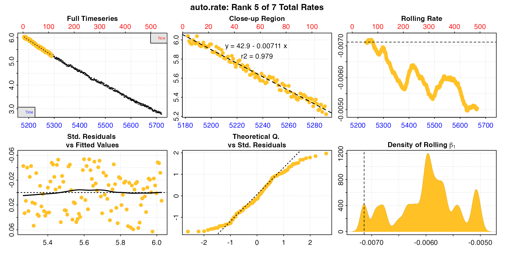
Many aspects will feed into rate selection criteria for a specific experiment or study, and it depends on these whether this in an acceptable, reportable result. Maybe at less than 2 minutes this is not a long enough duration for us to be comfortable that this was a sustained MMR. In which case perhaps one of the other results is better reported. Or maybe we could report an average of some of the rates, such as the top three. The important thing is to apply these selection criteria consistently and report them alongside results.
width
These are all valid options, as long as they are reported. However,
we can also change the analysis parameters. The width input
in auto_rate determines the width of the rolling
regressions used to find linear regions. See auto_rate()
and other vignettes for full details, but briefly in the case of the
"linear" method this is the starting point for the
analysis. Resulting regressions will vary in width, but in general the
minimum width will be increased by increasing the width.
The default value is 0.2, representing 20% of the data length. Here,
with 10 minutes of data this would represent 2 minutes, which is quite a
brief time window. So instead we will increase this to 0.5 (it can also
be specified in the units of the "by" input).
See Prinzing et al. (2021) for an excellent discussion of appropriate widths in rolling regressions to determine MMR.
zeb_mmr <- zeb_rep_1 |>
subset_data(from = 180, by = "row") |>
auto_rate(width = 0.5) |>
summary()
#>
#> # summary.auto_rate # -------------------
#>
#> === Summary of Results by Kernel Density Rank ===
#> rep rank intercept_b0 slope_b1 rsq density row endrow time endtime oxy endoxy rate
#> 1: NA 1 36.2 -0.00586 0.996 4258 146 447 5324 5625 5.03 3.30 -0.00586
#> 2: NA 2 34.6 -0.00556 0.993 1231 260 517 5438 5695 4.33 2.93 -0.00556
#> 3: NA 3 36.6 -0.00592 0.993 963 119 363 5297 5541 5.21 3.75 -0.00592
#> 4: NA 4 34.6 -0.00557 0.993 900 259 514 5437 5692 4.36 2.96 -0.00557
#> 5: NA 5 39.3 -0.00642 0.994 738 31 277 5209 5455 5.86 4.21 -0.00642
#> 6: NA 6 38.5 -0.00629 0.993 731 55 296 5233 5474 5.65 4.10 -0.00629
#>
#> Regressions : 272 | Results : 6 | Method : linear | Roll width : 271 | Roll type : row
#> -----------------------------------------Now we have six results varying between 4 and 5 minutes duration, and they are much more consistent in rate value. In this case the fifth result has the highest rate, is early in the replicate, and so is likely a good estimation of MMR. Note how the rolling rate plot is smoother with this higher width.
plot(zeb_mmr, pos = 5)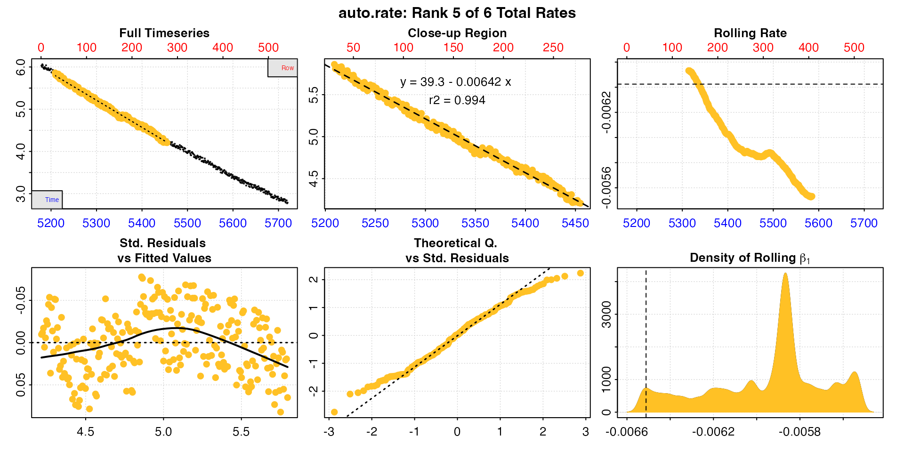
With non-linear data like this, such as from an animal recovering from exercise, increasing the width over which a rate is determined will necessarily decrease the rate values. The researcher needs to keep this in mind, and find a balance between a width that provides a good estimation of the specimen’s physiological state, but also is not affected by other factors such as data noise or anomalies. Most importantly, these decisions and criteria should be reported.
High width values can lead to overfitting and mis-estimation of
rates, and low widths underfitting and rate values which are too
sensitive to data noise. See here
for discussion of this in the context of auto_rate, and how
to choose an appropriate width. We recommend reading Prinzing
et al. (2021) to understand the nuances of determining MMR and
regression widths. See also Killen
et al. (2021).
The adjust_rate() function allows rates to be background
adjusted in a number of ways. See vignette("adjust_rate")
for examples. Here we will use it to apply a dynamic linear correction
using the start and end background rates we determined earlier. Essentially this calculates the
appropriate background adjustment for a rate using the time at which it
was determined, assuming the background rate increases linearly from the
pre- to post-experiment values.
For MMR, we will adjust the results from option 3 above, but this
will work with the other options also. We have our saved
auto_rate object, so it’s relatively easy to adjust. We
just need to enter the two background rate objects we saved earlier and
specify the method.
zeb_mmr_adj <- adjust_rate(zeb_mmr,
by = bg_pre, # first background rate
by2 = bg_post, # second background rate
method = "linear")
#> adjust_rate: Rate adjustments applied using "linear" method.
summary(zeb_mmr_adj)
#>
#> # summary.adjust_rate # -----------------
#>
#> Adjustment was applied using 'linear' method.
#> Summary of all rate results:
#>
#> rep rank intercept_b0 slope_b1 rsq density row endrow time endtime oxy endoxy rate adjustment rate.adjusted
#> 1: NA 1 36.2 -0.00586 0.996 4258 146 447 5324 5625 5.03 3.30 -0.00586 -0.0000761 -0.00578
#> 2: NA 2 34.6 -0.00556 0.993 1231 260 517 5438 5695 4.33 2.93 -0.00556 -0.0000761 -0.00549
#> 3: NA 3 36.6 -0.00592 0.993 963 119 363 5297 5541 5.21 3.75 -0.00592 -0.0000760 -0.00585
#> 4: NA 4 34.6 -0.00557 0.993 900 259 514 5437 5692 4.36 2.96 -0.00557 -0.0000761 -0.00550
#> 5: NA 5 39.3 -0.00642 0.994 738 31 277 5209 5455 5.86 4.21 -0.00642 -0.0000760 -0.00635
#> 6: NA 6 38.5 -0.00629 0.993 731 55 296 5233 5474 5.65 4.10 -0.00629 -0.0000760 -0.00622
#> -----------------------------------------There are several things to note here. We can see the ultimate
adjustment value is small in comparison to the rate of the
specimen, as it should be in most experiments. Also, the adjustment
values differ slightly; they are lower for rates that come from the
start of the replicate. This is what we would expect because we are
assuming the background rate is increasing over time.
adjust_rate uses the midpoint time of each rate regression
to calculate the appropriate adjustment value, so earlier rates will
have a lower background adjustment. Lastly, the adjustments are very
close in value to the pre-experiment background rate of
-0.0000742 we established earlier. Again, this is what we would expect
because this is the first replicate and conducted just after the first
background recording. If we are assuming there is a linear increase in
background rate over time this would mean they should be very close in
value.
See later section for how adjustment values differ in other replicates.
Now that the rates have been adjusted we can convert them to units. This will convert every rate in the object.
The convert_rate function can output rates as
absolute, that is of the whole animal or chamber,
mass-specific if a mass is entered, or
area-specific if an area is entered. The
output.unit should be correctly formatted for whichever of
these are chosen, that is in the order Oxygen/Time, Oxygen/Time/Mass, or
Oxygen/Time/Area.
Note the volume input is volume of water in the
respirometer, not the volume of the respirometer. That is, it
represents the effective volume. A specimen will displace some
of the water, therefore this is the volume of the respirometer minus the
volume of the specimen. There are several approaches to calculate the
effective volume or specimen volume: geometrically; through displacement
in a separate vessel; or calculated from the mass and density. For
example, fish are often assumed to have an equal density as water (~1000
kg/m^3), so their mass is measured, converted to volume and subtracted
from the respirometer volume. Volume could also be determined directly
by pouring out and measuring the water at the end of the experiment, or
by weighing the respirometer. See the respfun
respirometry utilities package for functions to calculate the effective
volume and convert water mass to volume.
Here we use the adjust_rate object saved in the previous
step, and we’ll convert to a mass-specific rate.
zeb_mmr_adj_conv <- convert_rate(zeb_mmr_adj,
oxy.unit = "mg/L", # oxygen units of the original raw data
time.unit = "secs", # time units of the original raw data
output.unit = "mg/h/g", # desired output unit
volume = 0.12, # effective volume of the respirometer in L
mass = 0.0009) # mass of the specimen in kg
summary(zeb_mmr_adj_conv)
#>
#> # summary.convert_rate # ----------------
#> Summary of all converted rates:
#>
#> rep rank intercept_b0 slope_b1 rsq density row endrow time endtime oxy endoxy rate adjustment rate.adjusted rate.input oxy.unit time.unit volume mass area S t P rate.abs rate.m.spec rate.a.spec output.unit rate.output
#> 1: NA 1 36.2 -0.00586 0.996 4258 146 447 5324 5625 5.03 3.30 -0.00586 -0.0000761 -0.00578 -0.00578 mg/L sec 0.12 0.0009 NA NA NA NA -2.50 -2.78 NA mgO2/hr/g -2.78
#> 2: NA 2 34.6 -0.00556 0.993 1231 260 517 5438 5695 4.33 2.93 -0.00556 -0.0000761 -0.00549 -0.00549 mg/L sec 0.12 0.0009 NA NA NA NA -2.37 -2.63 NA mgO2/hr/g -2.63
#> 3: NA 3 36.6 -0.00592 0.993 963 119 363 5297 5541 5.21 3.75 -0.00592 -0.0000760 -0.00585 -0.00585 mg/L sec 0.12 0.0009 NA NA NA NA -2.53 -2.81 NA mgO2/hr/g -2.81
#> 4: NA 4 34.6 -0.00557 0.993 900 259 514 5437 5692 4.36 2.96 -0.00557 -0.0000761 -0.00550 -0.00550 mg/L sec 0.12 0.0009 NA NA NA NA -2.37 -2.64 NA mgO2/hr/g -2.64
#> 5: NA 5 39.3 -0.00642 0.994 738 31 277 5209 5455 5.86 4.21 -0.00642 -0.0000760 -0.00635 -0.00635 mg/L sec 0.12 0.0009 NA NA NA NA -2.74 -3.05 NA mgO2/hr/g -3.05
#> 6: NA 6 38.5 -0.00629 0.993 731 55 296 5233 5474 5.65 4.10 -0.00629 -0.0000760 -0.00622 -0.00622 mg/L sec 0.12 0.0009 NA NA NA NA -2.69 -2.98 NA mgO2/hr/g -2.98
#> -----------------------------------------The $summary table contains all rate regression
parameters and data locations, adjustments (if applied), units, and
more. In fact it contains all relevant information about the
analysis and is a great way of saving the results, especially using the
export = TRUE input to save it as a data frame. One handy
tip: you may want to enter S, t, and
P even if they are not required for conversions to the
output rate unit because they are saved in the $summary
table, and this can help in keeping track of results across different
experiments. Note the row and endrow columns
will refer to rows of the most recent subset of the data, however the
time and endtime will always refer back to the
time values of original raw data.
The last analysis step is to select our final reportable MMR from the
multiple rates we determined using the linear method. We
saw earlier that after changing some analysis
parameters one of the MMR rates, the 5th in the summary table, was
higher than the others.
summary(zeb_mmr_adj_conv)
#>
#> # summary.convert_rate # ----------------
#> Summary of all converted rates:
#>
#> rep rank intercept_b0 slope_b1 rsq density row endrow time endtime oxy endoxy rate adjustment rate.adjusted rate.input oxy.unit time.unit volume mass area S t P rate.abs rate.m.spec rate.a.spec output.unit rate.output
#> 1: NA 1 36.2 -0.00586 0.996 4258 146 447 5324 5625 5.03 3.30 -0.00586 -0.0000761 -0.00578 -0.00578 mg/L sec 0.12 0.0009 NA NA NA NA -2.50 -2.78 NA mgO2/hr/g -2.78
#> 2: NA 2 34.6 -0.00556 0.993 1231 260 517 5438 5695 4.33 2.93 -0.00556 -0.0000761 -0.00549 -0.00549 mg/L sec 0.12 0.0009 NA NA NA NA -2.37 -2.63 NA mgO2/hr/g -2.63
#> 3: NA 3 36.6 -0.00592 0.993 963 119 363 5297 5541 5.21 3.75 -0.00592 -0.0000760 -0.00585 -0.00585 mg/L sec 0.12 0.0009 NA NA NA NA -2.53 -2.81 NA mgO2/hr/g -2.81
#> 4: NA 4 34.6 -0.00557 0.993 900 259 514 5437 5692 4.36 2.96 -0.00557 -0.0000761 -0.00550 -0.00550 mg/L sec 0.12 0.0009 NA NA NA NA -2.37 -2.64 NA mgO2/hr/g -2.64
#> 5: NA 5 39.3 -0.00642 0.994 738 31 277 5209 5455 5.86 4.21 -0.00642 -0.0000760 -0.00635 -0.00635 mg/L sec 0.12 0.0009 NA NA NA NA -2.74 -3.05 NA mgO2/hr/g -3.05
#> 6: NA 6 38.5 -0.00629 0.993 731 55 296 5233 5474 5.65 4.10 -0.00629 -0.0000760 -0.00622 -0.00622 mg/L sec 0.12 0.0009 NA NA NA NA -2.69 -2.98 NA mgO2/hr/g -2.98
#> -----------------------------------------In this case, we could fairly confidently report this as our MMR of
-3.05 mg/h/g. However, the select_rate() function allows
you to filter rates by applying selection criteria. This example will
select and extract the highest n rates to a new object, in
this case the highest single rate. This is quite a simplistic example,
but see later and vignette("select_rate") for more advanced
examples including how to apply multiple criteria.
MMR <- select_rate(zeb_mmr_adj_conv,
method = "highest",
n = 1)
#> select_rate: Selecting highest 1 *absolute* rate values...
#> ----- Selection complete. 5 rate(s) removed, 1 rate(s) remaining -----If we need to save any of the other regression data for this rate,
summary has additional inputs that are useful:
pos allows specific rows of summary tables to be extracted,
and export allows it to be saved as a separate data frame.
Here, we’ll use this on the final object to export the coefficients and
other data for this rate.
mmr_results <- summary(MMR, export = TRUE)
mmr_results
#> rep rank intercept_b0 slope_b1 rsq density row endrow time endtime oxy endoxy rate adjustment rate.adjusted rate.input oxy.unit time.unit volume mass area S t P rate.abs rate.m.spec rate.a.spec output.unit rate.output
#> <num> <int> <num> <num> <num> <num> <int> <int> <num> <num> <num> <num> <num> <num> <num> <num> <char> <char> <num> <num> <lgcl> <lgcl> <lgcl> <lgcl> <num> <num> <lgcl> <char> <num>
#> 1: NA 5 39.3 -0.00642 0.994 738 31 277 5209 5455 5.86 4.21 -0.00642 -0.000076 -0.00635 -0.00635 mg/L sec 0.12 0.0009 NA NA NA NA -2.74 -3.05 NA mgO2/hr/g -3.05This is the complete analysis we have just conducted to get MMR.
mmr_results <-
zeb_rep_1 |> # using the inspected replicate 1 data...
subset_data(from = 180,
by = "row") |> # subset to apply a 'wait' period
auto_rate(width = 0.5) |> # use auto_rate to get most linear regions
adjust_rate(by = bg_pre,
by2 = bg_post,
method = "linear") |> # adjust
convert_rate(oxy.unit = "mg/L",
time.unit = "secs",
output.unit = "mg/h/g",
volume = 0.12,
mass = 0.0009) |> # convert
select_rate(method = "highest",
n = 1) |> # select highest rate
summary(export = TRUE) # final reportable result#> rep rank intercept_b0 slope_b1 rsq density row endrow time endtime oxy endoxy rate adjustment rate.adjusted rate.input oxy.unit time.unit volume mass area S t P rate.abs rate.m.spec rate.a.spec output.unit rate.output
#> <num> <int> <num> <num> <num> <num> <int> <int> <num> <num> <num> <num> <num> <num> <num> <num> <char> <char> <num> <num> <lgcl> <lgcl> <lgcl> <lgcl> <num> <num> <lgcl> <char> <num>
#> 1: NA 5 39.3 -0.00642 0.994 738 31 277 5209 5455 5.86 4.21 -0.00642 -0.000076 -0.00635 -0.00635 mg/L sec 0.12 0.0009 NA NA NA NA -2.74 -3.05 NA mgO2/hr/g -3.05This allows you to document all analysis parameters and rate selection criteria so that they can be consistently applied and reported alongside the results. See Reporting section for how analyses might be reported concisely in text.
calc_rate.int
To extract a rate from every replicate and calculate a routine
metabolic rate (RMR) from amongst the results we will use
calc_rate.int(). To repeat the note from above, this is not a recommendation that this is
how you should extract an RMR from your own data; it is simply an
example of one approach and how the respR functions are
flexible and adaptable. calc_rate.int was introduced in respR v2.1
and allows you to specify a replicate structure and run
calc_rate on each replicate to extract a rate from the same
time or row region in each. See vignette("calc_rate.int")
for details of the functionality.
The difference between this and the approach below using auto_rate.int() is that you
specify a region over which to calculate a rate, and this will be the
same in each replicate. This takes away some of the objectivity in
determining rates that auto_rate allows for, but as long as
selection criteria are reported and applied consistently is a perfectly
valid way of processing intermittent-flow data.
We’ve shown above how to get background rates and MMR, so we will use
calc_rate.int to extract a rate from the same region of
each replicate and filter these rates to report an RMR. In these data,
after the first replicate of 14 minutes duration for MMR there is a regular structure of 105 replicates of 11
minutes duration including the flush.
In the examples here
we had to specify the start and end location of every replicate in
calc_rate.int. However, if replicates cycle at a regular
interval we can simply enter this as starts. This tells the
function that starting from row 1 replicates cycle at this regular
interval, and it can be entered as a row interval or a duration in time,
as specified using the by input. We only need to subset the
data so that the first replicate starts at row 1 before passing it to
calc_rate.int.
We start by subsetting the data so that the 105 regularly-spaced
replicates start at row 1, that is we exclude the starting background
recording, the first replicate for MMR, and the end background
recording. We then inspect it.
zeb_insp <- zeb_intermittent.rd |>
subset_data(from = 5840,
to = 75139,
by = "row") |>
inspect()
#> inspect: Applying column default of 'time = 1'
#> inspect: Applying column default of 'oxygen = 2'
#> inspect: No issues detected while inspecting data frame.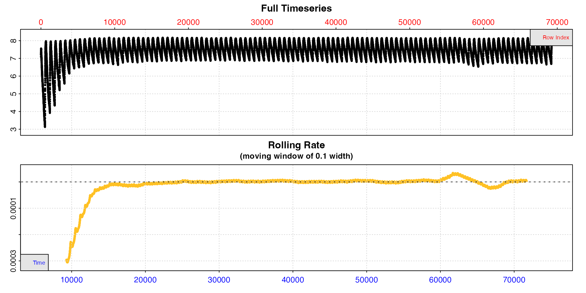
Now we run calc_rate.int and specify a 660 row interval
between replicates using starts. We’ll calculate a rate
across the same five minute time period in each replicate, from three
minutes to eight minutes. To do this we specify a 180 row
wait phase and 300 row measure phase.
zeb_cr.int <- calc_rate.int(zeb_insp,
starts = 660,
wait = 180,
measure = 300,
by = "row")
#> plot.calc_rate.int: Plotting first 20 selected reps only. To plot others modify 'pos' input.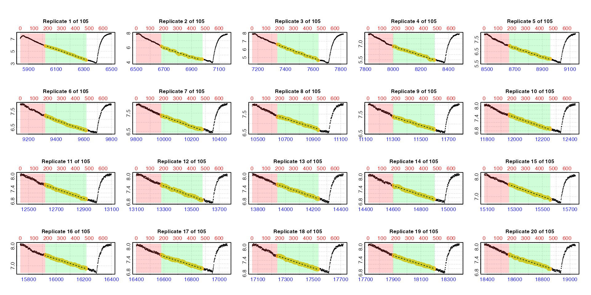
By default the function plots the first 20 replicates (pos
can be used to choose others up to a maximum of 20). Note how the lower
time axis has the actual raw data time values, but the top row axis
refers to the rows of each replicate subset. In these plots the rate
data is the yellow points, the red shaded region is the
wait phase, and the green shaded region the
measure phase.
We can use summary() to view the results.
summary(zeb_cr.int)
#>
#> # summary.calc_rate.int # ---------------
#> Summary of all replicate results:
#>
#> rep rank intercept_b0 slope_b1 rsq row endrow time endtime oxy endoxy rate.2pt rate
#> 1: 1 1 53.3 -0.00786 0.995 181 480 6020 6319 5.90 3.57 -0.00781 -0.00786
#> 2: 2 1 47.2 -0.00615 0.977 841 1140 6680 6979 6.24 4.41 -0.00614 -0.00615
#> 3: 3 1 52.7 -0.00628 0.990 1501 1800 7340 7639 6.64 4.64 -0.00668 -0.00628
#> 4: 4 1 41.3 -0.00432 0.984 2161 2460 8000 8299 6.74 5.45 -0.00434 -0.00432
#> 5: 5 1 38.8 -0.00368 0.986 2821 3120 8660 8959 6.99 5.88 -0.00369 -0.00368
#> ---
#> 101: 101 1 162.7 -0.00215 0.974 66181 66480 72020 72319 7.58 6.94 -0.00215 -0.00215
#> 102: 102 1 174.1 -0.00229 0.977 66841 67140 72680 72979 7.56 6.88 -0.00228 -0.00229
#> 103: 103 1 168.4 -0.00219 0.977 67501 67800 73340 73639 7.59 6.94 -0.00217 -0.00219
#> 104: 104 1 181.5 -0.00235 0.977 68161 68460 74000 74299 7.62 6.93 -0.00231 -0.00235
#> 105: 105 1 170.0 -0.00218 0.972 68821 69120 74660 74959 7.61 6.96 -0.00218 -0.00218
#> -----------------------------------------As we saw from our inspection of the data earlier, rates are higher at the start of the
dataset because the specimen was exercised before being placed in the
respirometer. We will filter these out shortly. For now we can see we
have a rate from every replicate. Our entered time range has been
applied within each replicate, and the replicate each rate
originates from can be seen in the $rep column.
calc_rate.int objects also work with
adjust_rate, including with dynamic adjustment methods.
Here, we’ll adjust using the pre- and post-experiment background
recordings assuming the background rate increases linearly from the
initial to ending background rates.
zeb_cr.int_adj <- adjust_rate(zeb_cr.int,
by = bg_pre,
by2 = bg_post,
method = "linear")
#> adjust_rate: Rate adjustments applied using "linear" method.If the adjustments were correctly applied we would expect the
adjustment value of the early replicates to be close to the value of the
initial background rate (-0.000074), and those of the later
ones close to that of the ending background rate
(-0.000120). Let’s look at the summary to check, and use
pos to pick out one from the start, middle and end.
summary(zeb_cr.int_adj, pos = c(1, 50, 105))
#>
#> # summary.adjust_rate # -----------------
#>
#> Adjustment was applied using 'linear' method.
#> Summary of rate results from entered 'pos' rank(s):
#>
#> rep rank intercept_b0 slope_b1 rsq row endrow time endtime oxy endoxy rate.2pt rate adjustment rate.adjusted
#> 1: 1 1 53.3 -0.00786 0.995 181 480 6020 6319 5.90 3.57 -0.00781 -0.00786 -0.0000765 -0.00778
#> 2: 50 1 89.6 -0.00214 0.966 32521 32820 38360 38659 7.64 7.03 -0.00204 -0.00214 -0.0000971 -0.00204
#> 3: 105 1 170.0 -0.00218 0.972 68821 69120 74660 74959 7.61 6.96 -0.00218 -0.00218 -0.0001201 -0.00206
#> -----------------------------------------As expected the $adjustment column values increase over
the experiment between these values, so we can proceed to
conversion.
Now we will convert the rates, then plot the values to decide how to select a final RMR rate.
zeb_cr.int_conv <- convert_rate(zeb_cr.int_adj,
oxy.unit = "mg/L", # oxygen units of the original raw data
time.unit = "secs", # time units of the original raw data
output.unit = "mg/h/g", # desired output unit
volume = 0.12, # effective volume of the respirometer in L
mass = 0.0009) # mass of the specimen in kgThe converted rates can be seen in the summary table.
summary(zeb_cr.int_conv)
#>
#> # summary.convert_rate # ----------------
#> Summary of all converted rates:
#>
#> rep rank intercept_b0 slope_b1 rsq density row endrow time endtime oxy endoxy rate adjustment rate.adjusted rate.input oxy.unit time.unit volume mass area S t P rate.abs rate.m.spec rate.a.spec output.unit rate.output
#> 1: 1 1 53.3 -0.00786 0.995 NA 181 480 6020 6319 5.90 3.57 -0.00786 -0.0000765 -0.00778 -0.00778 mg/L sec 0.12 0.0009 NA NA NA NA -3.363 -3.736 NA mgO2/hr/g -3.736
#> 2: 2 1 47.2 -0.00615 0.977 NA 841 1140 6680 6979 6.24 4.41 -0.00615 -0.0000769 -0.00608 -0.00608 mg/L sec 0.12 0.0009 NA NA NA NA -2.625 -2.917 NA mgO2/hr/g -2.917
#> 3: 3 1 52.7 -0.00628 0.990 NA 1501 1800 7340 7639 6.64 4.64 -0.00628 -0.0000773 -0.00621 -0.00621 mg/L sec 0.12 0.0009 NA NA NA NA -2.681 -2.978 NA mgO2/hr/g -2.978
#> 4: 4 1 41.3 -0.00432 0.984 NA 2161 2460 8000 8299 6.74 5.45 -0.00432 -0.0000778 -0.00424 -0.00424 mg/L sec 0.12 0.0009 NA NA NA NA -1.831 -2.035 NA mgO2/hr/g -2.035
#> 5: 5 1 38.8 -0.00368 0.986 NA 2821 3120 8660 8959 6.99 5.88 -0.00368 -0.0000782 -0.00360 -0.00360 mg/L sec 0.12 0.0009 NA NA NA NA -1.556 -1.729 NA mgO2/hr/g -1.729
#> ---
#> 101: 101 1 162.7 -0.00215 0.974 NA 66181 66480 72020 72319 7.58 6.94 -0.00215 -0.0001185 -0.00203 -0.00203 mg/L sec 0.12 0.0009 NA NA NA NA -0.879 -0.977 NA mgO2/hr/g -0.977
#> 102: 102 1 174.1 -0.00229 0.977 NA 66841 67140 72680 72979 7.56 6.88 -0.00229 -0.0001189 -0.00217 -0.00217 mg/L sec 0.12 0.0009 NA NA NA NA -0.939 -1.043 NA mgO2/hr/g -1.043
#> 103: 103 1 168.4 -0.00219 0.977 NA 67501 67800 73340 73639 7.59 6.94 -0.00219 -0.0001193 -0.00207 -0.00207 mg/L sec 0.12 0.0009 NA NA NA NA -0.895 -0.995 NA mgO2/hr/g -0.995
#> 104: 104 1 181.5 -0.00235 0.977 NA 68161 68460 74000 74299 7.62 6.93 -0.00235 -0.0001197 -0.00223 -0.00223 mg/L sec 0.12 0.0009 NA NA NA NA -0.963 -1.070 NA mgO2/hr/g -1.070
#> 105: 105 1 170.0 -0.00218 0.972 NA 68821 69120 74660 74959 7.61 6.96 -0.00218 -0.0001201 -0.00206 -0.00206 mg/L sec 0.12 0.0009 NA NA NA NA -0.888 -0.987 NA mgO2/hr/g -0.987
#> -----------------------------------------We can see the converted rates as the last column. The
$summary table contains the all rate regression parameters
and data locations, adjustments (if applied), units, and more. It can be
exported as a separate data frame by using export = TRUE in
summary(). This is a great way of exporting all the
relevant data for your final results.
It will depend on the aims and circumstances of an experiment what rate results to extract, summarise, and report. For instance we might report RMR as a mean of a representative selection of rates after the specimens uptake rate has stabilised, or a mean of a number or percentile of lowest rates found. The important thing is to apply these selection criteria consistently and report them alongside results.
As of respR v2.1
convert_rate has new plotting functionality to help
visualise and explore rate results. For intermittent-flow results the
most useful of these is type = "rate".
plot(zeb_cr.int_conv, type = "rate")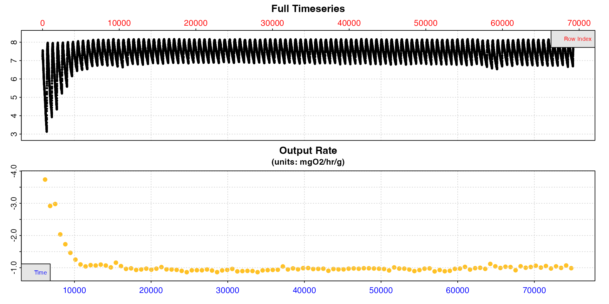
This shows how the calculated rate values vary across the dataset. We can see from this plot they are high at the start, stabilise after around timepoint 20000, then are a little unstable again if not slightly elevated after timepoint 60000. Between these however they appear to be very stable.
The select_rate() function allows
convert_rate results to be filtered or reordered in various
ways. See help("select_rate") and
vignette("select_rate") for more details. For this
analysis, lets only use rates from replicates between timepoints 20000
and 60000. Then, simply to show an example of how rates can be further
selected, let’s only select those with r-squared of 0.97 and above,
select the lowest 20, and finally take the mean of them.
RMR <- zeb_cr.int_conv |>
select_rate(method = "time", n = c(20000, 60000)) |>
select_rate(method = "rsq", n = c(0.97, 1)) |>
select_rate(method = "lowest", n = 20) |>
summary() |>
mean()
#> select_rate: Selecting rates which occur only between times 20000 and 60000...
#> ----- Selection complete. 45 rate(s) removed, 60 rate(s) remaining -----
#> select_rate: Selecting rates with rsq values between 0.97 and 1...
#> ----- Selection complete. 24 rate(s) removed, 36 rate(s) remaining -----
#> select_rate: Selecting lowest 20 *absolute* rate values...
#> ----- Selection complete. 16 rate(s) removed, 20 rate(s) remaining -----
#>
#> # summary.convert_rate # ----------------
#> Summary of all converted rates:
#>
#> rep rank intercept_b0 slope_b1 rsq density row endrow time endtime oxy endoxy rate adjustment rate.adjusted rate.input oxy.unit time.unit volume mass area S t P rate.abs rate.m.spec rate.a.spec output.unit rate.output
#> 1: 25 1 52.8 -0.00207 0.971 NA 16021 16320 21860 22159 7.70 7.06 -0.00207 -0.0000866 -0.00198 -0.00198 mg/L sec 0.12 0.0009 NA NA NA NA -0.855 -0.950 NA mgO2/hr/g -0.950
#> 2: 26 1 54.0 -0.00206 0.972 NA 16681 16980 22520 22819 7.68 7.06 -0.00206 -0.0000870 -0.00197 -0.00197 mg/L sec 0.12 0.0009 NA NA NA NA -0.851 -0.946 NA mgO2/hr/g -0.946
#> 3: 33 1 63.6 -0.00206 0.972 NA 21301 21600 27140 27439 7.71 7.08 -0.00206 -0.0000899 -0.00197 -0.00197 mg/L sec 0.12 0.0009 NA NA NA NA -0.852 -0.947 NA mgO2/hr/g -0.947
#> 4: 36 1 66.0 -0.00200 0.971 NA 23281 23580 29120 29419 7.66 7.08 -0.00200 -0.0000912 -0.00191 -0.00191 mg/L sec 0.12 0.0009 NA NA NA NA -0.826 -0.917 NA mgO2/hr/g -0.917
#> 5: 38 1 71.5 -0.00210 0.972 NA 24601 24900 30440 30739 7.63 7.06 -0.00210 -0.0000920 -0.00201 -0.00201 mg/L sec 0.12 0.0009 NA NA NA NA -0.867 -0.963 NA mgO2/hr/g -0.963
#> 6: 39 1 68.0 -0.00194 0.971 NA 25261 25560 31100 31399 7.71 7.05 -0.00194 -0.0000924 -0.00185 -0.00185 mg/L sec 0.12 0.0009 NA NA NA NA -0.799 -0.887 NA mgO2/hr/g -0.887
#> 7: 49 1 85.7 -0.00207 0.972 NA 31861 32160 37700 37999 7.69 7.03 -0.00207 -0.0000966 -0.00197 -0.00197 mg/L sec 0.12 0.0009 NA NA NA NA -0.853 -0.947 NA mgO2/hr/g -0.947
#> 8: 51 1 88.7 -0.00208 0.970 NA 33181 33480 39020 39319 7.66 6.98 -0.00208 -0.0000975 -0.00198 -0.00198 mg/L sec 0.12 0.0009 NA NA NA NA -0.856 -0.951 NA mgO2/hr/g -0.951
#> 9: 55 1 95.4 -0.00211 0.973 NA 35821 36120 41660 41959 7.63 7.03 -0.00211 -0.0000992 -0.00201 -0.00201 mg/L sec 0.12 0.0009 NA NA NA NA -0.868 -0.964 NA mgO2/hr/g -0.964
#> 10: 58 1 99.3 -0.00210 0.973 NA 37801 38100 43640 43939 7.70 7.04 -0.00210 -0.0001004 -0.00200 -0.00200 mg/L sec 0.12 0.0009 NA NA NA NA -0.864 -0.960 NA mgO2/hr/g -0.960
#> 11: 59 1 99.7 -0.00208 0.971 NA 38461 38760 44300 44599 7.66 6.95 -0.00208 -0.0001008 -0.00198 -0.00198 mg/L sec 0.12 0.0009 NA NA NA NA -0.855 -0.950 NA mgO2/hr/g -0.950
#> 12: 63 1 107.2 -0.00212 0.977 NA 41101 41400 46940 47239 7.63 7.00 -0.00212 -0.0001025 -0.00202 -0.00202 mg/L sec 0.12 0.0009 NA NA NA NA -0.872 -0.969 NA mgO2/hr/g -0.969
#> 13: 68 1 113.5 -0.00211 0.971 NA 44401 44700 50240 50539 7.67 7.02 -0.00211 -0.0001046 -0.00200 -0.00200 mg/L sec 0.12 0.0009 NA NA NA NA -0.865 -0.962 NA mgO2/hr/g -0.962
#> 14: 73 1 118.7 -0.00207 0.972 NA 47701 48000 53540 53839 7.67 7.01 -0.00207 -0.0001067 -0.00197 -0.00197 mg/L sec 0.12 0.0009 NA NA NA NA -0.850 -0.944 NA mgO2/hr/g -0.944
#> 15: 74 1 114.6 -0.00197 0.970 NA 48361 48660 54200 54499 7.66 7.02 -0.00197 -0.0001071 -0.00187 -0.00187 mg/L sec 0.12 0.0009 NA NA NA NA -0.807 -0.896 NA mgO2/hr/g -0.896
#> 16: 75 1 119.6 -0.00204 0.973 NA 49021 49320 54860 55159 7.67 7.04 -0.00204 -0.0001076 -0.00193 -0.00193 mg/L sec 0.12 0.0009 NA NA NA NA -0.835 -0.928 NA mgO2/hr/g -0.928
#> 17: 79 1 125.3 -0.00205 0.973 NA 51661 51960 57500 57799 7.67 7.04 -0.00205 -0.0001092 -0.00194 -0.00194 mg/L sec 0.12 0.0009 NA NA NA NA -0.837 -0.930 NA mgO2/hr/g -0.930
#> 18: 80 1 122.0 -0.00197 0.971 NA 52321 52620 58160 58459 7.60 7.01 -0.00197 -0.0001097 -0.00186 -0.00186 mg/L sec 0.12 0.0009 NA NA NA NA -0.803 -0.892 NA mgO2/hr/g -0.892
#> 19: 81 1 125.0 -0.00200 0.974 NA 52981 53280 58820 59119 7.67 7.01 -0.00200 -0.0001101 -0.00189 -0.00189 mg/L sec 0.12 0.0009 NA NA NA NA -0.815 -0.905 NA mgO2/hr/g -0.905
#> 20: 82 1 133.8 -0.00212 0.973 NA 53641 53940 59480 59779 7.68 7.03 -0.00212 -0.0001105 -0.00201 -0.00201 mg/L sec 0.12 0.0009 NA NA NA NA -0.869 -0.965 NA mgO2/hr/g -0.965
#> -----------------------------------------
#>
#> # mean.convert_rate # -------------------
#> Mean of all rate results:
#>
#> Mean of 20 output rates:
#> [1] -0.939
#> [1] "mgO2/hr/g"
#> -----------------------------------------That’s it; this is our final routine metabolic rate (at least, as we have chosen to define it).
auto_rate.int
To extract a rate from every replicate and determine a standard
metabolic rate (SMR) from amongst the results we will use
auto_rate.int(). To repeat the note from above, this is not a recommendation that this is
how you should extract an SMR from your own data; it is simply an
example of one approach and how the respR functions are
flexible and adaptable.
Introduced in respR v2.1,
auto_rate.int() is a dedicated function for
intermittent-flow respirometry data, in which you specify a replicate
structure and run auto_rate() on each replicate. This
function extracts rates in a number of ways including the most linear or
most consistently maintained rates, plus highest and lowest rates of a
specified width. See vignette("auto_rate") for more
details, and vignette("auto_rate.int") for an overview of
this function.
The difference between this and the approach above using calc_rate.int() is that the
specified measure phase is not the same as the region over
which a rate is calculated. Instead a measure phase is
specified and the auto_rate analysis is done
within this region using the method and
width inputs. This can result in rates of different widths
coming from within this region depending on the inputs.
We again subset the data so that the 105 regularly-spaced replicates start at row 1.
zeb_insp <- zeb_intermittent.rd |>
subset_data(from = 5840,
to = 75139,
by = "row") |>
inspect()
#> inspect: Applying column default of 'time = 1'
#> inspect: Applying column default of 'oxygen = 2'
#> inspect: No issues detected while inspecting data frame.To get SMR we necessarily need to define it, in particular the duration over which rates are calculated within each replicate. These should be chosen appropriately and with reference to best practices and previous studies. Here, let’s say we want to extract the lowest rate across 2 minutes within each replicate, and we will define our SMR for this specimen as the mean of the lowest 10th percentile of all 105 extracted rates.
We run auto_rate.int on the inspected data and use
method = "lowest" and width = 120. This means
the function calculates every rate of this width within each
replicate, orders them according to the input method, and
by default (n = 1) returns the top ranked result, in this
case the lowest, for each replicate.
We again specify a 660 row interval between replicates using
starts. Just to be different from the above example, this time we will specify a 2 minute
(120 row) wait phase, and six minute (360 row)
measure phase.
zeb_ar.int <- auto_rate.int(zeb_insp,
starts = 660,
wait = 120,
measure = 360,
method = "lowest",
width = 120,
by = "row") |>
summary()
#> plot.auto_rate.int: Plotting first 20 selected rates only. To plot others modify 'pos' input.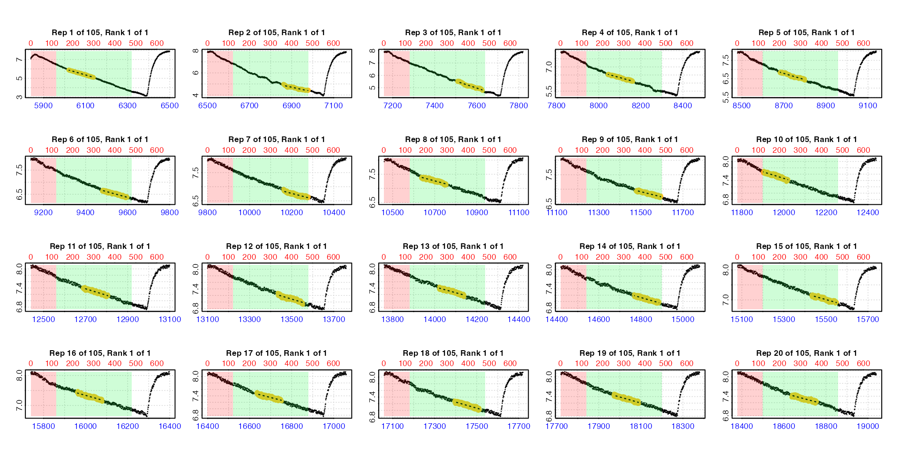
Note how the plots show the rates coming from different regions within each replicate measure phase. The summary contains all the results, that is the lowest 2-minute rate from each replicate. Before selecting from amongst these to get our final SMR we first need to adjust and convert them. This is exactly the same process we followed in the example above.
zeb_ar.int_adj <- adjust_rate(zeb_ar.int,
by = bg_pre,
by2 = bg_post,
method = "linear")
#> adjust_rate: Rate adjustments applied using "linear" method.
zeb_ar.int_conv <- convert_rate(zeb_ar.int_adj,
oxy.unit = "mg/L", # oxygen units of the original raw data
time.unit = "secs", # time units of the original raw data
output.unit = "mg/h/g", # desired output unit
volume = 0.12, # effective volume of the respirometer in L
mass = 0.0009) # mass of the specimen in kg
summary(zeb_ar.int_conv)
#>
#> # summary.convert_rate # ----------------
#> Summary of all converted rates:
#>
#> rep rank intercept_b0 slope_b1 rsq density row endrow time endtime oxy endoxy rate adjustment rate.adjusted rate.input oxy.unit time.unit volume mass area S t P rate.abs rate.m.spec rate.a.spec output.unit rate.output
#> 1: 1 1 45.5 -0.00658 0.984 NA 179 298 6018 6137 5.88 5.12 -0.00658 -0.0000764 -0.00650 -0.00650 mg/L sec 0.12 0.0009 NA NA NA NA -2.810 -3.122 NA mgO2/hr/g -3.122
#> 2: 2 1 34.0 -0.00424 0.906 NA 1021 1140 6860 6979 5.00 4.41 -0.00424 -0.0000770 -0.00416 -0.00416 mg/L sec 0.12 0.0009 NA NA NA NA -1.798 -1.998 NA mgO2/hr/g -1.998
#> 3: 3 1 47.3 -0.00557 0.932 NA 1668 1787 7507 7626 5.51 4.81 -0.00557 -0.0000774 -0.00549 -0.00549 mg/L sec 0.12 0.0009 NA NA NA NA -2.374 -2.638 NA mgO2/hr/g -2.638
#> 4: 4 1 35.5 -0.00360 0.952 NA 2203 2322 8042 8161 6.55 6.13 -0.00360 -0.0000777 -0.00352 -0.00352 mg/L sec 0.12 0.0009 NA NA NA NA -1.522 -1.691 NA mgO2/hr/g -1.691
#> 5: 5 1 36.2 -0.00338 0.928 NA 2841 2960 8680 8799 6.87 6.50 -0.00338 -0.0000781 -0.00330 -0.00330 mg/L sec 0.12 0.0009 NA NA NA NA -1.426 -1.584 NA mgO2/hr/g -1.584
#> ---
#> 101: 101 1 154.6 -0.00204 0.850 NA 66251 66370 72090 72209 7.43 7.20 -0.00204 -0.0001185 -0.00192 -0.00192 mg/L sec 0.12 0.0009 NA NA NA NA -0.831 -0.923 NA mgO2/hr/g -0.923
#> 102: 102 1 146.2 -0.00191 0.836 NA 66862 66981 72701 72820 7.54 7.32 -0.00191 -0.0001188 -0.00179 -0.00179 mg/L sec 0.12 0.0009 NA NA NA NA -0.773 -0.859 NA mgO2/hr/g -0.859
#> 103: 103 1 151.7 -0.00197 0.852 NA 67680 67799 73519 73638 7.18 6.97 -0.00197 -0.0001194 -0.00185 -0.00185 mg/L sec 0.12 0.0009 NA NA NA NA -0.797 -0.886 NA mgO2/hr/g -0.886
#> 104: 104 1 162.6 -0.00209 0.864 NA 68269 68388 74108 74227 7.35 7.10 -0.00209 -0.0001197 -0.00197 -0.00197 mg/L sec 0.12 0.0009 NA NA NA NA -0.853 -0.948 NA mgO2/hr/g -0.948
#> 105: 105 1 147.5 -0.00187 0.817 NA 68986 69105 74825 74944 7.17 6.97 -0.00187 -0.0001202 -0.00175 -0.00175 mg/L sec 0.12 0.0009 NA NA NA NA -0.758 -0.842 NA mgO2/hr/g -0.842
#> -----------------------------------------We can plot the convert_rate object for a quick look at
how rates vary across the data.
plot(zeb_ar.int_conv, type = "rate")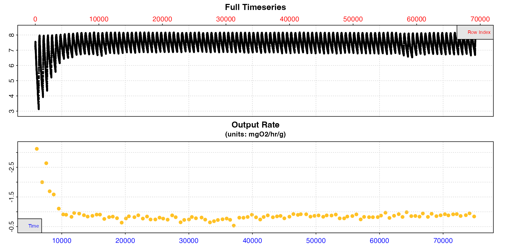
These rates seem to be a bit lower than those we extracted for RMR above, as we would expect for an SMR.
This is an opportunity to do some quality control before we select
our final rates to determine SMR. Looking at the plot above there is one
result that seems to be uncharacteristically low compared to the others
with a value just over 0.5. Looking at the summary table we can see this
is from replicate 48. We can plot a selection of rates from this region
using pos and the y-axis range will adapt to provide a more
detailed view of the range of rates.
plot(zeb_ar.int_conv, type = "rate", pos = 30:80)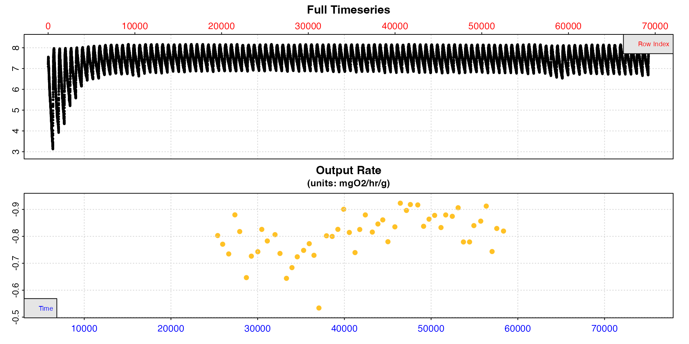
Replicate 48 does seem to be anomalously low. If we go back to the
auto_rate.int results object we can use pos to
plot this replicate for a closer look. We’ll do this in two different
ways using type. Firstly the rate in the context of the
whole replicate, secondly the auto_rate output plot for
this replicate which has more diagnostic plots, but only shows the
measure phase.
plot(zeb_ar.int, type = "rep", pos = 48)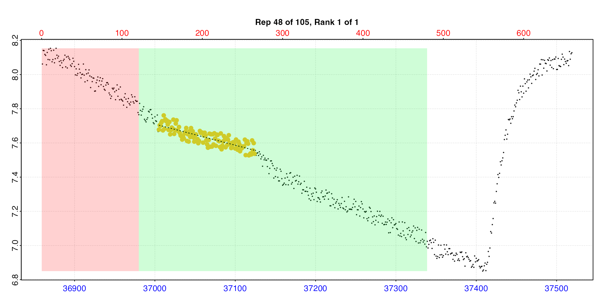
plot(zeb_ar.int, type = "ar", pos = 48)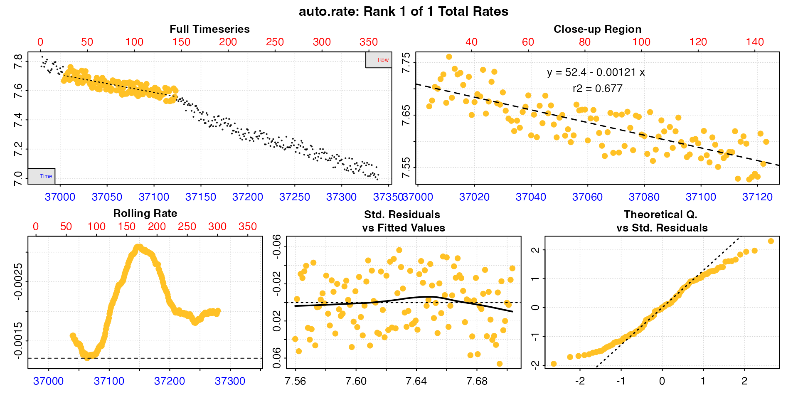
Looking at these plots this result does seem to be anomalous, and in this replicate the rate extracted is not really representative. It also has a lower r-squared which otherwise varies from 0.72 to 0.98. There seems to be an anomaly in the oxygen trace, maybe a sensor glitch or slight temperature change. Issues like this causing glitches in the trace are very common.
Therefore, it would be perfectly acceptable and justifiable to manually exclude this result (there are also 1 or 2 others we might want to investigate). To apply such selection criteria objectively and systematically would require examining multiple experiments. This is why definitions of metrics like SMR and analysis parameters should usually be decided upon after thoroughly exploring all your results. After this you should be able to arrive at a set of objective and reasonable selection criteria.
To get our final SMR we just need to use select_rate
again with our chosen criteria, and pipe the result to
mean. We decided above our
definition of SMR would be the mean of the lowest 10th percentile of the
rates extracted from each replicate. We also want to exclude the result
from replicate 48.
Excluding this replicate could be achieved in a number of ways in
select_rate. We could use method = "rsq" to
select only results with r-squared above a certain value which excludes
this one. We could use the time_omit method to exclude this
rate based on its timepoint (found in the summary table), or use the
rep method simply to select all replicates except
this one. There is a specific rep_omit method however to
remove particular replicates.
SMR <- zeb_ar.int_conv |>
select_rate(method = "rep_omit", n = 48) |>
select_rate(method = "lowest_percentile", n = 0.1) |>
summary() |>
mean()
#> select_rate: Selecting rates which *ARE NOT* from 'rep_omit' replicates...
#> ----- Selection complete. 1 rate(s) removed, 104 rate(s) remaining -----
#> select_rate: Selecting lowest 10th percentile of *absolute* rate values...
#> ----- Selection complete. 93 rate(s) removed, 11 rate(s) remaining -----
#>
#> # summary.convert_rate # ----------------
#> Summary of all converted rates:
#>
#> rep rank intercept_b0 slope_b1 rsq density row endrow time endtime oxy endoxy rate adjustment rate.adjusted rate.input oxy.unit time.unit volume mass area S t P rate.abs rate.m.spec rate.a.spec output.unit rate.output
#> 1: 21 1 34.5 -0.00141 0.725 NA 13533 13652 19372 19491 7.24 7.12 -0.00141 -0.0000849 -0.00132 -0.00132 mg/L sec 0.12 0.0009 NA NA NA NA -0.571 -0.634 NA mgO2/hr/g -0.634
#> 2: 28 1 46.5 -0.00163 0.789 NA 18076 18195 23915 24034 7.45 7.29 -0.00163 -0.0000878 -0.00154 -0.00154 mg/L sec 0.12 0.0009 NA NA NA NA -0.667 -0.741 NA mgO2/hr/g -0.741
#> 3: 32 1 50.5 -0.00162 0.802 NA 20764 20883 26603 26722 7.38 7.16 -0.00162 -0.0000895 -0.00153 -0.00153 mg/L sec 0.12 0.0009 NA NA NA NA -0.661 -0.735 NA mgO2/hr/g -0.735
#> 4: 35 1 48.4 -0.00144 0.722 NA 22801 22920 28640 28759 7.27 7.11 -0.00144 -0.0000908 -0.00135 -0.00135 mg/L sec 0.12 0.0009 NA NA NA NA -0.582 -0.647 NA mgO2/hr/g -0.647
#> 5: 36 1 54.4 -0.00160 0.783 NA 23373 23492 29212 29331 7.50 7.31 -0.00160 -0.0000912 -0.00151 -0.00151 mg/L sec 0.12 0.0009 NA NA NA NA -0.654 -0.726 NA mgO2/hr/g -0.726
#> 6: 41 1 60.3 -0.00163 0.780 NA 26675 26794 32514 32633 7.36 7.25 -0.00163 -0.0000933 -0.00153 -0.00153 mg/L sec 0.12 0.0009 NA NA NA NA -0.663 -0.736 NA mgO2/hr/g -0.736
#> 7: 42 1 55.0 -0.00144 0.727 NA 27421 27540 33260 33379 7.26 7.11 -0.00144 -0.0000938 -0.00134 -0.00134 mg/L sec 0.12 0.0009 NA NA NA NA -0.580 -0.644 NA mgO2/hr/g -0.644
#> 8: 43 1 58.8 -0.00152 0.776 NA 28056 28175 33895 34014 7.28 7.14 -0.00152 -0.0000942 -0.00142 -0.00142 mg/L sec 0.12 0.0009 NA NA NA NA -0.615 -0.684 NA mgO2/hr/g -0.684
#> 9: 44 1 62.7 -0.00160 0.775 NA 28667 28786 34506 34625 7.37 7.20 -0.00160 -0.0000946 -0.00151 -0.00151 mg/L sec 0.12 0.0009 NA NA NA NA -0.652 -0.724 NA mgO2/hr/g -0.724
#> 10: 47 1 66.4 -0.00162 0.792 NA 30595 30714 36434 36553 7.54 7.32 -0.00162 -0.0000958 -0.00152 -0.00152 mg/L sec 0.12 0.0009 NA NA NA NA -0.657 -0.730 NA mgO2/hr/g -0.730
#> 11: 54 1 74.8 -0.00164 0.766 NA 35329 35448 41168 41287 7.21 7.02 -0.00164 -0.0000988 -0.00154 -0.00154 mg/L sec 0.12 0.0009 NA NA NA NA -0.666 -0.740 NA mgO2/hr/g -0.740
#> -----------------------------------------
#>
#> # mean.convert_rate # -------------------
#> Mean of all rate results:
#>
#> Mean of 11 output rates:
#> [1] -0.704
#> [1] "mgO2/hr/g"
#> -----------------------------------------We can see the summary of the final 11 selected rates, and then the mean of these. This is our final SMR.
Now we have our final results for each metric.
Typically these rates would now be reported as positive values.
The above is a lengthy description of an analysis, so this vignette
may not give a good impression of just how succinct a respR
analysis may be. This code block shows the entire analysis for SMR.
# Inspect data ------------------------------------------------------------
zeb <- inspect(zeb_intermittent.rd)
# Background --------------------------------------------------------------
bg_pre <- subset_data(zeb, from = 0, to = 4999, by = "time") |>
calc_rate.bg()
bg_post <- subset_data(zeb, from = 75140, to = 79251, by = "time") |>
calc_rate.bg()
# SMR Analysis ------------------------------------------------------------
# Subset ------------------------------------------------------------------
zeb |>
subset_data(from = 5840,
to = 75139,
by = "row") |>
# Extract rates -----------------------------------------------------------
auto_rate.int(starts = 660,
wait = 120,
measure = 360,
method = "lowest",
width = 120,
by = "row") |>
# Adjust ------------------------------------------------------------------
adjust_rate(by = bg_pre,
by2 = bg_post,
method = "linear") |>
# Convert -----------------------------------------------------------------
convert_rate(oxy.unit = "mg/L",
time.unit = "secs",
output.unit = "mg/h/g",
volume = 0.12,
mass = 0.0009) |>
# Select -----------------------------------------------------------------
select_rate(method = "rep_omit", n = 48) |>
select_rate(method = "lowest_percentile", n = 0.1) |>
summary() |>
mean()The ultimate aim of respR was to enable clear reporting
and reproducible analyses. This is an example of how we might report the
above analysis in a manuscript.
“Data was analysed using the R package respR
(Harianto et al. 2019). The auto_rate.int function was used
to extract the lowest rate across a two minute window from each
replicate. Rates were adjusted for background using pre- and
post-experiment blank recordings with no specimen, assuming a linear
increase in background rate over time. Obviously anomalous rates were
excluded, and SMR was defined as the mean of the lowest 10th percentile
of remaining adjusted rates.”
Previous versions of this vignette demonstrated use of different
methods, such as looping and subsetting of data, to extract individual
replicates for processing through calc_rate or
auto_rate. These approaches still work and are archived here
in case they are of use in some cases, for example if you want to
extract rates from the same oxygen range in each replicate. However for
most analyses use of calc_rate.int or
auto_rate.int is the recommended approach.